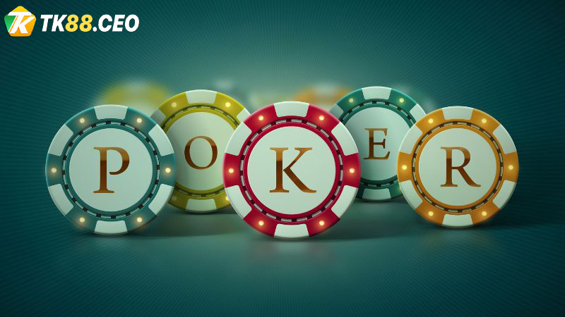
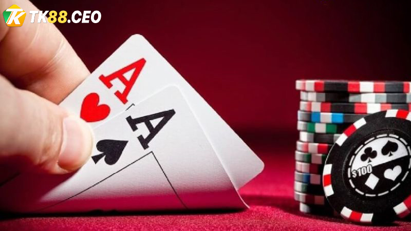
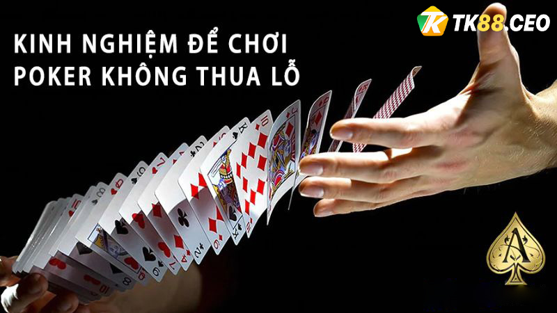
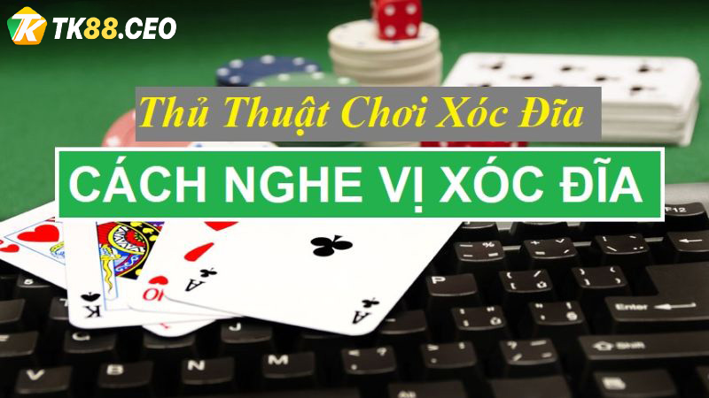

BACCARAT
TOP kinh nghiệm kiếm tiền từ game Poker dành cho game thủ
Game bài Poker không còn quá xa lạ với những người chơi cá cược trực tuyến. Tuy nhiên để có thể giành chiến thắng thì không phải là một điều dễ dàng. Nhất là với tân thủ thì việc tìm kiếm thông tin về trò chơi này là khá cần thiết. Để có thể góp phần thành công trong quá trình chinh phục chiến thắng thì không thể thiếu được kinh nghiệm. Dưới đây là tổng hợp kinh nghiệm kiếm tiền từ game Poker dành cho mọi game thủ từ TK88 , đừng bỏ lỡ nhé!
Tổng quan về game Poker
Tổng quan về game Poker
Bài Poker là thể loại chơi khá phổ biến tại các sòng Casino truyền thống và online. Cách thức chơi
khá đơn giản khi bạn sở hữu hai lá bài ẩn và không được mở. Đồng thời thì có thể sử dụng các yếu tố
cược/ tố/ pot. Bất cứ ai kết hợp bài tốt nhất thì được ăn pot và người chơi khác sẽ bỏ bài.
Cách chơi Poker cơ bản là mỗi game thủ được chia cho 2 lá bài. Sau đó thì sẽ chia tiếp 3 lá bài
chung. Tổng cộng trong mỗi ván có 5 lá bài chung được chia ra, bạn có nhiệm vụ kết hợp 5 lá bài cùng
2 lá bài tạo ra thế mạnh nhất.
Song song với đó là ở giữa các vòng sẽ có các vòng đặt cược để gia tăng số tiền. Một điều khá thú vị
với trò này là người chơi cần phải đặt cược trước nếu như muốn bắt đầu. Vì điều này mà khá kích
thích game thủ đồng thời loại bỏ được khá nhiều người chưa sẵn sàng.
Kinh nghiệm kiếm tiền từ game Poker tại TK88
Kinh nghiệm kiếm tiền từ game Poker tại TK88
Để có thể giành được chiến thắng trong khi chơi Poker thì nhà cái TK88 đã tổng hợp các mẹo sau. Hy vọng rằng với kinh nghiệm kiếm tiền từ game Poker dưới đây giúp bạn gai tăng cơ hội chiến thắng:
Quan sát cũng như phân tích bài của đối thủ
Game bài Poker khá giống với cách đánh tiến lên mà hầu hết người khác đã từng chơi. Với
sức mạnh của các lá bài từng người được tạo nên bởi may mắn và sự tính toán của người đó. Việc chọn
quân bài dựa vào cách thức tính toán là một điều khá cần thiết trong trò chơi.
Khi chơi game bài Poker bạn cần phải quan sát cũng như phân tích đối thủ từ thái độ sau khi nhận bài
từ Dealer. Việc này khá đơn giản thông qua việc họ chọn rút các lá bài tiếp theo. Thông thường thì
với những người có số điểm đẹp sẽ có các biểu hiện tăng mức cược lên cao.
Dựa qua đó mà anh em phỏng đoán được bài đang có các cây gì để bổ sung lá bài tiếp theo giúp bộ
Poker nặng ký hơn.
Kinh nghiệm kiếm tiền từ game Poker qua việc soi cầu từng ván
Đây là một kinh nghiệm hay ho mà những game thủ mới khi chơi Poker tại TK88. Theo chia
sẻ từ cao thủ thì giữa những ván chơi Poker có một sự liên kết nhất định. Sau đó 4 – 5 ván thì cửa
cược thắng đầu tiên sẽ quay lại.
Game thủ cần phải soi cầu thật kỹ để kết quả ván thắng trước đó rút ra cho mình một quy luật chơi.
Từ đó anh em có được các phán đoán chính xác nhất đặt cược thông qua cửa tiếp theo.
>>> Xem thêm: Tổng hợp kinh nghiệm kiếm tiền từ game tiến lên miền Nam
Cần chia nhỏ tiền cược trong mỗi ván – kinh nghiệm kiếm tiền từ game Poker
Cần chia nhỏ tiền cược trong mỗi ván – kinh nghiệm kiếm tiền từ game Poker
Trong game Poker trực tuyến thì có nhiều ván khác nhau. Vì thế càng chơi sâu thì khả
năng thắng của bạn sẽ tăng cao. Nghĩa là người chơi tham gia nhiều ván cược thì cơ hội thắng sẽ càng
lớn. Để có thể thực hiện điều này thì bạn phải học hỏi kinh nghiệm rất hay là chia nhỏ tiền cược.
Nhiều game thủ nghĩ rằng chia nhỏ tiền cược thì khi thắng sẽ nhận được nhiều. Điều này thì không sai
nhưng mục đích cuối cùng là giành chiến thắng và tìm cơ hội thắng. Vì thế bỏ ra số tiền nhỏ để chơi
cũng như học hỏi kinh nghiệm là quan trọng.
Đồng thời theo kinh nghiệm kiếm tiền từ game Poker online chia nhỏ tiền cược giúp bạn chơi nhiều
ván. Nếu có thua thì tiền cược mất đi cũng rất là ít. Nếu được thì bạn sẽ nhận được tiền thưởng và
cơ hội tiến vào vòng sâu hơn để nhận.
Tất nhiên là chia nhỏ tiền cược thực chất là người chơi có nhiều ngân phiếu và số tiền chia ra ít
vẫn lớn. Vì thế mà tổng hợp được các vòng thắng thì số tiền nhận thưởng cũng khá là cao.
Lựa chọn bàn cược mà đối thủ yếu
Theo kinh nghiệm kiếm tiền từ game Poker mà cao thủ chia sẻ thì không nên chọn bàn cược
có đối thủ mạnh. Vì họ sẽ dễ dàng đọc vị nắm bắt lối chơi của bạn. Trước đó thì những đối thủ mạnh
với kinh nghiệm tốt nhất là bạn chọn một bàn cược mới.
Người chơi biết được điều là người chơi giỏi, lâu năm luôn có nhiều lợi thế. Đồng thời những kẻ mạnh
chỉ thắng khi chơi cùng bàn với kẻ yếu hơn. Bạn chọn bàn cược có đối thủ dưới tầm chính là cách để
bạn làm chủ những ván Poker trực tuyến.
Phải tìm hiểu thật kỹ các kiểu đặt cược – Kinh nghiệm kiếm tiền từ game Poker
Trong khi chơi game bài Poker thì ngoài hiểu luật bạn phải nắm được từng loại cược. Việc này giúp bạn nhanh tay và có thể thành công trong quá trình chơi:
- Cược lấy lợi: là kiểu cược cơ bản nhất mà bạn sử dụng khi sở hữu quân bài mạnh. Đồng thời bạn có thể khiến người chơi yếu hơn than vãn, giúp bạn kiếm được lợi nhuận.
- Cược để ăn tiền chết: là kiểu cược liên hoàn để ăn pot ngay lập tức.
- Cược láo cược hù: là kiểu cược mà game thủ thực sự có kinh nghiệm mới có thể chơi. Ở đây thì bạn dù có thế bài yếu vẫn sẽ khiến đối phương có bài mạnh cũng bỏ bài. Kiểu cược này tác động đến tâm lý cũng như mang về phần thắng nhưng phải cẩn trọng.
Kinh nghiệm kiếm tiền từ game Poker là không chơi nhiều cửa
Nhiều game thủ vẫn sẽ lầm tưởng rằng chơi nhiều cửa thì có nhiều cơ hội thắng hơn. Tuy
nhiên thì đây là quan điểm được xem là sai lầm. Nếu như bạn không chọn lọc bài tẩy thì khả năng cao
là thua rất nhanh.
Dù bất kỳ cửa nào cũng có cơ hội thắng nhưng xác suất không đồng đều nhau. Có các cửa mang đến thắng
lợi và có các cửa bạn sạch túi nhanh. Vì thế kinh nghiệm kiếm tiền từ game Poker là đánh giá kỹ bài,
không chơi nhiều cửa.
Game thủ không lạm dụng Bluff
Game thủ không lạm dụng Bluff – kinh nghiệm kiếm tiền từ game Poker
Đây còn được gọi là cược hù cược láo – một chiến thuật quan trọng giúp người chơi chuyển
bại thành thắng. Tuy nhiên đừng áp dụng kỹ thuật này quá nhiều sẽ làm giảm tác dụng chiến thuật.
Nếu bạn cược láo quá nhiều thì đối thủ sẽ đoán được và khiến bạn bại trận. Hơn nữa thì nếu muốn dùng
cách này phải hiểu rõ cuộc chơi, có đủ tự tin mới thành công.
Kinh nghiệm kiếm tiền từ game Poker là không ngại Tight
Ở thực tế thì khi chơi Poker chọn Tight thực sự mang lại một hiệu quả khá đặc biệt. Cách
chơi này không thua mà mang về thắng lợi cho bạn là ít hay nhiều mà thôi. Tuy nhiên để đạt hiệu quả
thì bạn cần biết cách Tight.
Thông qua đó Tight khác với kiểu Weak và bạn cũng cần phải kết hợp thêm cược láo để đối phương sợ,
bỏ bài.
Chơi lớn ở vòng Pre – Flop
Trong khi chơi Poker nếu như người chơi sở hữu 2 lá bài đầu tiên mà có giá trị lớn thì
cần bình tĩnh. Bạn không được để cho đối phương biết được thế bài của mình sau đó chọn cách chơi để
đối thủ ngã bài.
Kinh nghiệm kiếm tiền từ game Poker tại TK88 bằng cách này sẽ đánh lừa người chơi. Bạn chọn Call
ngang đồng thời Tố bài đầu tiên thì chắc chắn sẽ dính bẫy.
Luôn linh hoạt thay đổi chiến thuật Poker
Nếu muốn đạt hiệu quả cao trong trò chơi thì bạn cần phải học thêm nhiều chiến thuật
chơi. Với cách này bạn sẽ vận dụng lối chơi linh hoạt và đối phương không thể nhận ra. Với kinh
nghiệm kiếm tiền từ game Poker bằng cách này thì có nhiều cơ hội thắng.
Bên cạnh đó thì chơi với 1 chiến thuật duy nhất không đạt hiệu quả mà nhàm chán. Vạn cảm thấy chán
thì chắc chắn rằng chơi sẽ không có kết quả cao.
Cần phải thay đổi khoảng cách trong khi Tố bài – kinh nghiệm kiếm tiền từ game Poker
Để cho người chơi khác không đoán được bước đi thì bạn phải thay đổi khoảng Tố bài. Nhất là khi bạn chọn Tố bài ở đoạn Flop đảm bảo hiệu quả hơn nhiều. Đồng thời thì giúp bạn sở hữu được nhiều quân bài mạnh trong tay.
Phải tính toán kỹ lưỡng trước khi đưa ra quyết định
Trong khi chơi bài Poker thì thành viên trải qua các vòng tách cược. Đây là các vòng chơi mà bạn cần
phải đưa ra cho mình một quyết định. Các quyết định này ảnh hưởng trực tiếp đến kết quả ván bài.
Vì thế mà cần phải có cân nhắc, tính toán trong từng bước đi của mình. Với cách này thì bạn sẽ có
được những hành động đúng đắn nhất trong lối chơi. Đặc biệt là trong game bài Poker khi bạn sở hữu
một bộ bài không thắng thì tốt nhất nên bỏ bài. Chờ đợi ván bài tiếp theo để gỡ gạc khi có quân bài
đẹp.
Việc ôm bài xấu vào các vòng trong chỉ khiến bạn mất thêm tiền thôi. Vì thế đằng nào thua thì hãy
chọn thua ít tiền thay vì mà mất nhiều tiền.
Kinh nghiệm kiếm tiền từ game Poker thông qua cách đọc bài đối phương
Người chơi khi đọc bài đối phương không phải là điều mà bất cứ ai cũng có thể làm được. Tuy nhiên
nếu như đạt tới cảnh giới này thì việc chiến thắng sẽ nằm trong tầm tay.
Vì thế mà bạn cần phải học hỏi, tích lũy kỹ năng cho bản thân thông qua các ván bài trước đó. Với
kinh nghiệm kiếm tiền từ game Poker thông qua nâng cấp đọc bài đối phương.
Học cách buông đôi AA
Học cách buông đôi AA – kinh nghiệm kiếm tiền từ game Poker
A là lá bài chơi có giá trị cực kỳ lớn. Điều này sẽ khiến game thủ có tâm lý ngại bỏ A nhất là khi họ sở hữu cả đôi. Tuy nhiên theo kinh nghiệm kiếm tiền từ game Poker thì bạn phải cân nhắc ván mình đang chơi. Nếu như thấy AA có thể kết hợp được thì hãy chơi, ngược lại thì hãy buông bỏ.
Tân thủ không nên chơi cùng ván với cao thủ – kinh nghiệm kiếm tiền từ game Poker
Đôi khi kinh nghiệm kiếm tiền từ game Poker đổi thưởng anh em gặp tình huống trớ trêu này. Chỉ thiếu
1 lá bài là có thể trở thành hand mạnh nhất và lúc thế này hầu như người chơi có tâm lý đợi bài.
Tuy nhiên thì chờ đợi có thể khiến bạn thua khá là nhiều. Nếu như gặp trường hợp này thì bạn cân
nhắc kỹ trận Poker tại nhà cái TK88 nhé! Nếu thấy đối thủ bet mạnh thì không nên đợi quá nhiều.
Với đối thủ nhẹ thì bạn hoàn toàn có thể đợi cũng như đặt cược theo đó. Việc lựa chọn đợi hoặc không
sẽ có hiệu quả phụ thuộc nhiều vào chính người chơi.
Cần phải biết điểm dừng khi chơi Poker online tại TK88 – kinh nghiệm kiếm tiền từ game Poker
Một điều quan trọng mà người chơi phải ghi nhớ là biết điểm dừng trong quá trình chơi bài. Bất cứ
game thủ nào khi chơi cũng cần quy định khoảng thời gian nhất định mỗi lượt chơi. Đặc biệt là khoảng
thời gian tốt nhất trong mỗi ngày là từ 1 đến 2 tiếng. Không nên vượt quá thời gian trên nếu như
không muốn ảnh hưởng đến cuộc sống.
Đặc biệt bạn phải đặt hạn mức số tiền trong mỗi lần chơi. Quy định tốt nhất là không được để thua
hơn 70% số vốn bạn có. Đặc biệt khi đã đạt hạng mức tiền đề ra thì dù thắng hay thua cũng phải dừng
lại. Vì trò chơi hấp dẫn nếu bạn cứ cố chơi thêm hoặc gỡ gạc thì hiệu quả không cao.
Chọn nhà cái uy tín để cược tiền Poker
Theo kinh nghiệm kiếm tiền từ game Poker từ cao thủ thì chọn nhà cái uy tín là một điều quan trọng.
Bạn sẽ đảm bảo thông tin cá nhân được bảo mật và không bị rò rỉ ra bên ngoài.
Đặc biệt nhà cái được cấp phép hoạt động hợp pháp trên thị trường quốc tế và nhận sự bảo hộ của
Philippines. Đảm bảo rằng mọi giao dịch được thực hiện bởi tổ chức tài chính quốc tế.
Đồng thời khi tham gia chơi bạn sẽ có cơ hội nhận nhiều ưu đãi. Giao dịch được thực hiện và hoàn tất
chỉ trong vài phút. Hình thức giao dịch đa dạng, hiện đại và bảo mật thông tin người chơi.
Trên đây là tổng hợp thông tin về kinh nghiệm kiếm tiền từ game Poker tại TK88. Hy vọng rằng với
những điều bổ ích trên sẽ giúp người chơi có được cơ hội chiến thắng trong trò chơi. Nếu có bất cứ
thắc mắc nào thì liên hệ nhà cái để được giải quyết ngay nhé!
>>> Xem thêm: Kinh nghiệm kiếm tiền từ game cá cược thể thao hay nhất 2023
BÀI VIẾT MỚI
30 Th1
Nhận thưởng khi thắng xổ số liên tiếp – Ưu đãi hấp dẫn TK88
Chức năng bình luận bị tắt
29 Th1
Khuyến mãi liền tay: Dự đoán bóng đá mùa giải 2023 – 2024
Chức năng bình luận bị tắt
29 Th1
Nhận 300K chơi miễn phí ngay tại nhà cái TK88
Chức năng bình luận bị tắt
28 Th1
Hoàn trả 100% cược thể thao cho lần thua đầu
Chức năng bình luận bị tắt
27 Th1
Khuyến mãi Hoàn trả 0,5% cho trò chơi siêu tốc TK88
Chức năng bình luận bị tắt
DANH MỤC CHÍNH
- Trang chủ
- Giới thiệu
- Xổ Số
- Thể Thao
- Live Casino
- Bắn Cá
- Đua Ngựa
- Đá gà
- Game slot
- Game bài
- Hướng Dẫn
- Khuyến Mãi